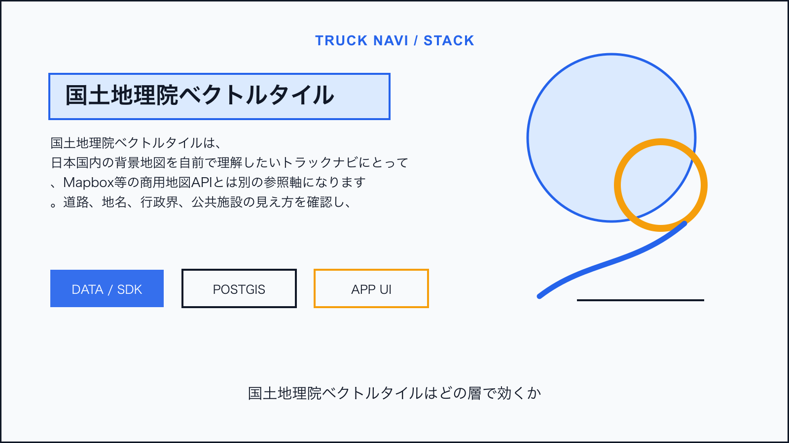
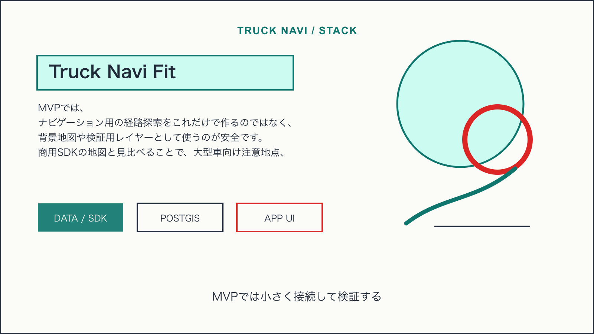
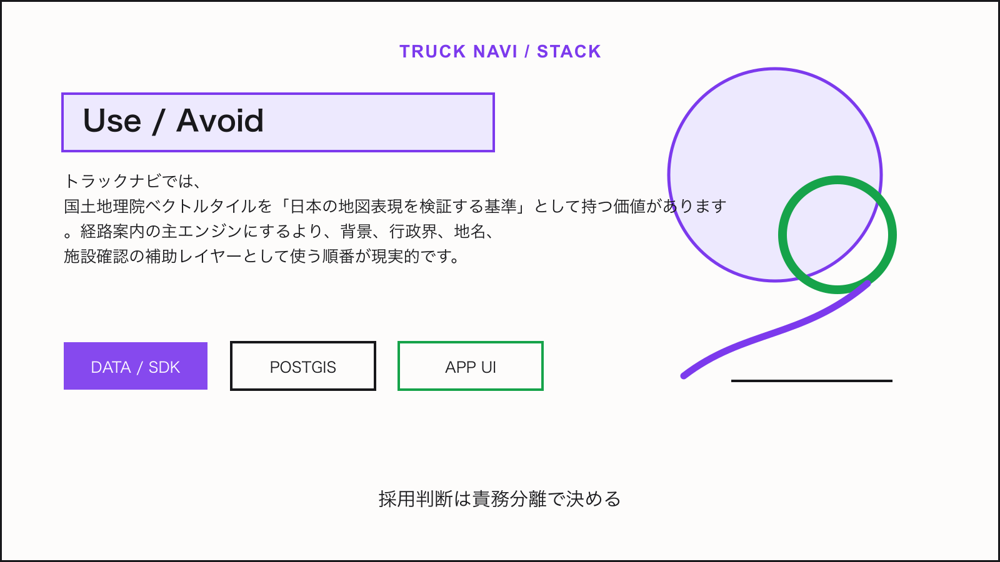

Tech Stack / Truck Navi
国土地理院ベクトルタイルをトラックナビの基礎地図として読む

この技術は何か
国土地理院ベクトルタイルは、日本国内の背景地図を自前で理解したいトラックナビにとって、Mapbox等の商用地図APIとは別の参照軸になります。道路、地名、行政界、公共施設の見え方を確認し、独自データを重ねるときの基礎地図として使えます。
NERV防災のライセンス情報から見える利用形態: 国土地理院ベクトルタイル提供実験、多言語化用ベクトルタイル、国土地理院最適化ベクトルタイルを加工して作成。
トラックナビで使えそうな理由
MVPでは、ナビゲーション用の経路探索をこれだけで作るのではなく、背景地図や検証用レイヤーとして使うのが安全です。商用SDKの地図と見比べることで、大型車向け注意地点、休憩候補、施設入口の表示漏れを発見できます。

アーキテクチャ上の置き場所
アプリ本体はMapbox/MapLibreで描画し、自社APIがPostGISから施設、規制、駐車候補を返します。国土地理院ベクトルタイルは、背景地図または管理画面の検証地図として読み込みます。
Mobile App / Admin UI
↓
Truck Navi API
↓
PostGIS / business data
↓
Map, tile, weather, or device layer採用時の注意点
- 利用条件と出典表示を画面内またはクレジット画面に置く
- ルート探索エンジンではなく地図データとして扱う
- 商用地図との差分を独自DBにそのまま流し込まず、根拠を確認する
結論
トラックナビでは、国土地理院ベクトルタイルを「日本の地図表現を検証する基準」として持つ価値があります。経路案内の主エンジンにするより、背景、行政界、地名、施設確認の補助レイヤーとして使う順番が現実的です。

Sources
この技術を使っていると表明しているサービス
- NERV防災は、提示されたライセンス情報上で国土地理院ベクトルタイル提供実験、多言語化用ベクトルタイル、国土地理院最適化ベクトルタイルを加工して作成していると表明している。